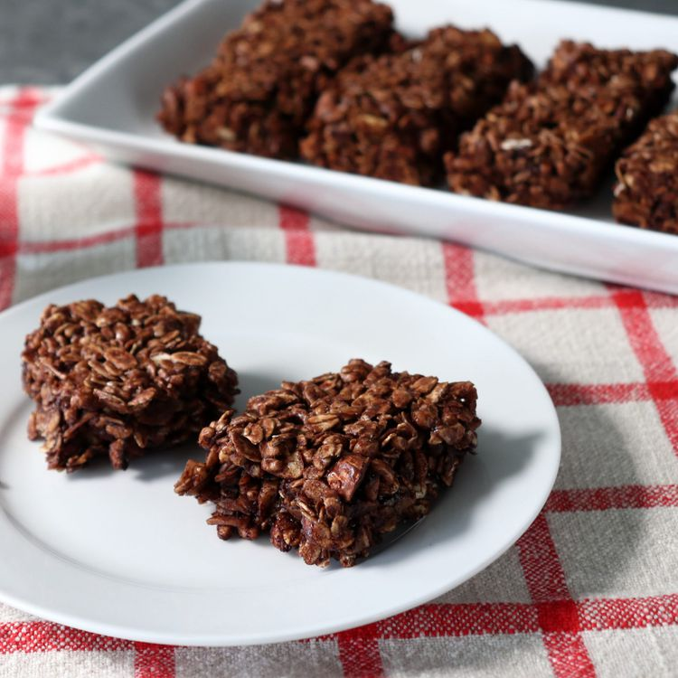

Breakfast Bars

Description
This isn't really a specific recipe, but rather a simple method that
allows you to create customized breakfast bars, energy bars, power bars,
sports bars, or whatever you decide to call them. Pretty much any
ready-to-eat breakfast grain or cereal can work here, along with all you
favorite nuts, seeds, and dried fruits. No matter what goes in yours, I
really do hope you give these a try soon. Enjoy!
Ingredients
- Oats
- Rice cereal
- Almonds
- Coconut
- Sugar
- Cocoa powder
- salt
- Maple syrup
- water
-
Preheat the oven to 350 degrees F (175 degrees C). Grease an 8x8 pan
with butter and line with parchment paper.
-
Combine rolled oats, puffed brown rice cereal, almonds, coconut, cocoa
powder, salt, and cayenne in a bowl.
-
Combine brown sugar, maple syrup, vegetable oil, and water in a small
saucepan and bring to a simmer over medium-high heat. Stir, and let the
mixture boil for 1 minute.
-
Pour sugar mixture over the dry ingredients in the bowl and mix
thoroughly. Transfer to the prepared pan, and smooth out the top,
pressing lightly with a spatula.
-
Bake in the preheated oven for 25 minutes. While still hot, use a
spatula to score the pan into 8 portions. Let cool to room temperature
before breaking into bars. You can also not score, and simply let cool,
then cut with a knife.